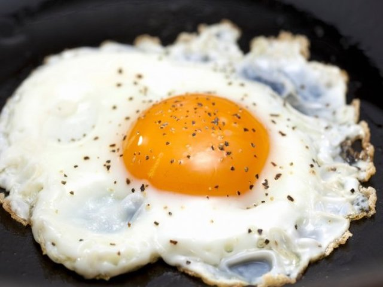

Huevo Estrellado
Description
This is a recipe for a fried egg in Mexico which is referred to as a "Huevo Estrellado". These are a key ingredient in the huevos rancheros recipe.
Ingredients
- Egg
- Olive oil
- Salt
- Pepper
Recipe Steps
- Crack an egg into a mug.
- Cover bottom of pan with oil and heat over high.
- Drop egg into oil and then add salt + pepper.
- Baste oil over egg with spoon.
- Take off oil and place on paper towel.